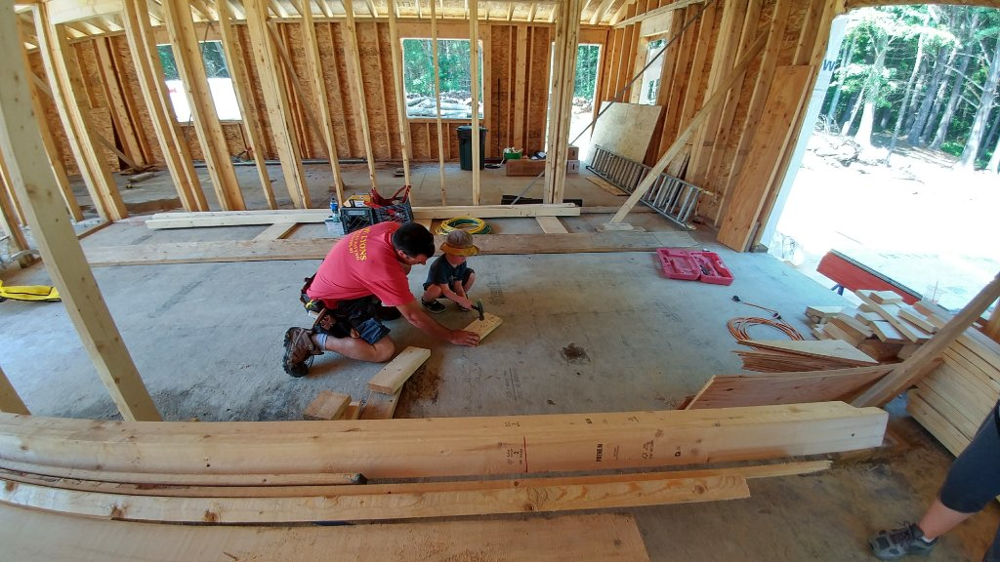
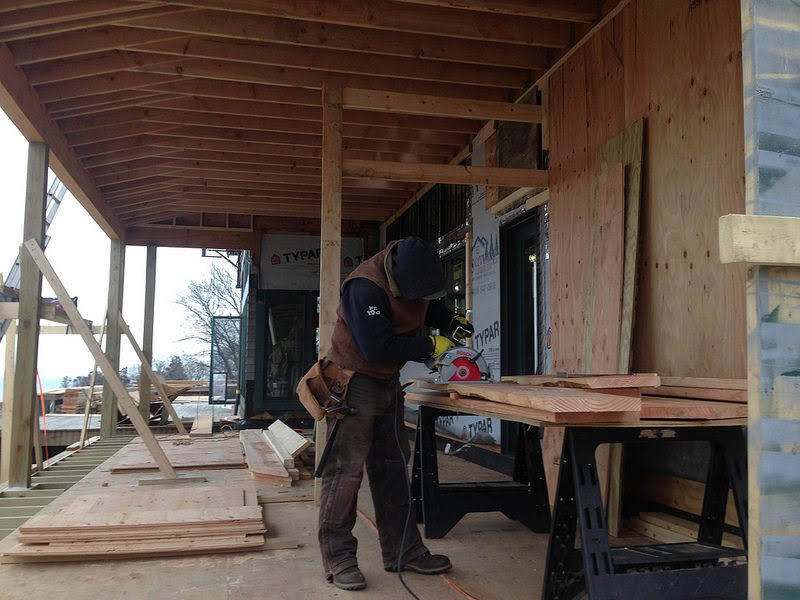

Listen first
Your home, priorities, and questions lead the conversation.
Owner-led construction and carpentry rooted in Foster, Rhode Island—thoughtfully planned, clearly communicated, and built with lasting respect for your home.
Follow the trail to our workA closer look at selected projects↓Begin the journey
Start a conversation, reach us directly, or open the right workspace for an active project.
How we can help
We are a small, owner-led company serving Foster and neighboring Rhode Island communities. From a single room to an addition, deck, barn, or outdoor structure, you can expect a straightforward plan, considerate crews, sound materials, and attention that lasts beyond the final walkthrough.
Request a conversationTell us what you have in mind↗The way we work
Good work begins by listening. We keep the next step visible, the decisions understandable, and the care consistent from one stage to the next.
Your home, priorities, and questions lead the conversation.
We look closely at the place and the practical details around it.
Scope, selections, timing, and decisions are made understandable.
Considerate crews and sound craft move the work forward.
We walk the work together and leave the home ready to enjoy.
Selected work
A small, honest look at projects and craftsmanship in progress. Open any photograph for a closer view.
Helpful answers
Clear answers make the first conversation easier.
We help with custom carpentry, additions, kitchen and bathroom renovations, decks, barns, finish work, and practical outdoor structures.
We are based in Foster, Rhode Island, and serve homeowners in Foster and neighboring Rhode Island communities.
Use the project form or call (401) 855-3705. Share what you are considering, your location, and any timing that matters. We will help you understand a sensible next step.
Yes. The client portal is designed to keep progress, selections, photographs, and important updates together in one clear place.
Yes. The trade partner desk organizes current plans, schedules, agreements, credentials, invoices, and change information.
When the time feels right
Or call us at (401) 855-3705
Our story
It began with a little yellow tractor, plenty of curiosity, and the habit of learning by doing. That early respect for useful work still guides us: show up, listen well, leave things better, and treat every home as someone’s most important place.

